By Scott Selfon, Audio Content Consultant, Xbox Advanced Technology Group
As discussed in more detail in the XACT chapters Authoring with the Xbox Audio Creation Tool (XACT) and Programming with the Xbox Audio Creation Tool (XACT) of Best Practices for Xbox Audio Design, XACT can be used to bundle waves into wave banks. These wave banks can be authored as "in memory," where their binary images are loaded entirely into memory, or they can be "streaming," where most of the wave data will reside on the hard disk and/or game disc, to be read into memory when needed. The focus of this paper will be on the memory and bandwidth aspects of using these streamed wave banks. The accompanying spreadsheet can be used to determine the memory impact for streaming one or more waves, as well as an estimate of the bandwidth requirements.
Determining the amount of memory a streaming wave bank will use depends on several factors: the wave format, the packet size, and, if looping and/or zero-latency streaming is being used, the prime packet size.
Wave format will determine the raw data rate for streaming this wave file. It can be determined by the following formula (units in parenthesis):
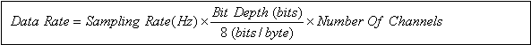
For instance, a 44.1-kHz 16-bit stereo (two-channel) wave would be:
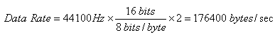
If ADPCM compression is used, the compressed data rate is:
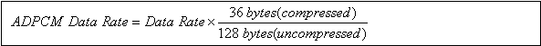
which is roughly 3.5 times smaller than the source content.
Packet size determines how much audio data will be accessed with each specific request. A larger packet size will mean more data is available (and the chance for a stream starving [running out of data] will be less), but each packet will require more system memory. Conversely, a small packet size will use less memory but increases the possibility that audio data won't be available when it needs to be played. Packet size also has bandwidth implications that will be discussed a little later.
Packet size is determined by the programmer at the time that a streamed wave bank is registered (via IXACTEngine::RegisterStreamedWaveBank), by setting the dwPacketSizeInMilliSecs element of the XACT_WAVEBANK_STREAMING_PARAMETERS structure. Note that packet size is indeed in milliseconds, meaning that the actual size in bytes will vary based on the format of each particular wave. In addition, recall that to provide for optimal asynchronous nonbuffered I/O, which will not block the CPU during reads,1 XACT automatically sector-aligned all waves in streamed wave banks. This alignment will now also apply to our packet size. For the hard disk, the sector size is 512 bytes, while on the game disc, sectors are 2048 bytes. Packet size does not depend on the length of the source wave, so whether we're using a five-second wave or a twenty-minute wave, the packet size will remain the same.
The formula for actual packet size:
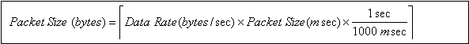
where means that we round up to the nearest sector size (512 bytes if streaming from the hard disk, or 2048 bytes if streaming from the game disc).
As an example, using the 44.1-kHz 16-bit stereo wave once again, if the wave was streamed from the hard disk and used a packet size of 100 msec (quite reasonable for the hard disk), the memory used per packet would be:
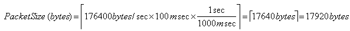
Similarly, if a packet size of 500 msec was streamed from the game disc, the memory used per packet would be:
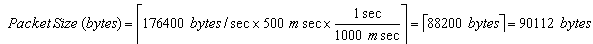
Streaming ADPCM waves adds another element to the mix. Remember that the Xbox audio hardware requires all ADPCM content to be 64-sample aligned. For mono waves, that translates into 36 bytes, and for stereo waves, 72 bytes. This same alignment requirement will need to be applied to the packet size.
ADPCM Alignment (HD) = L.C.M. (512,36) = 512 × 9 = 4608 bytes
ADPCM Alignment (Game Disc) = L.C.M. (2048,36) = 2048 × 9 = 18432 bytes
Remembering that the ADPCM data rate is 36/128 the size of the source PCM material, the packet size for the hard disk stream above would be:
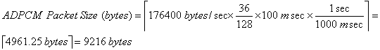
And the packet size for the game disc stream would be:
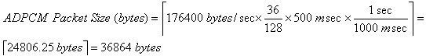
Note that the larger alignment size means that it's entirely possible that a streamed ADPCM wave might take more memory than its corresponding PCM source. As an example, if a 16-bit 22-kHz (22050 Hz) mono wave was streaming off the hard disk with a 90 msec packet size:
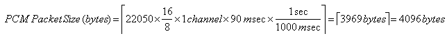
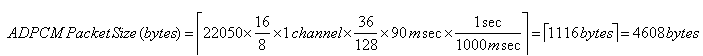
When waves are streaming, two packets are used per playing instance, so that one can always be accepting data while the other one is playing.
Prime packets are used when one or more extra packets will be read in for a wave at the time the bank is initialized. A prime packet will be used in two scenarios:
In the case where a wave is both looped and using zero-latency streaming, two prime packets are used.
As with regular packets, prime packet size is set in milliseconds by the programmer when the streaming wave bank is registered. It's often easiest to use the same size for prime packets as was used for regular packets. The formula used to determine the prime packet size in bytes is the same as that used for regular packets:
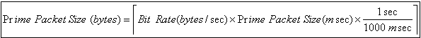
The same sector alignment restrictions are used as with regular packets.
Now that we know the size of each of our packets and prime packets, we need only to determine how many packets our particular waves will use to determine the actual memory needed. The memory implications of a playing streamed wave are as follows:
| Streaming, non-looped | 2 packets, 0 prime packets |
| Streaming, looped | 2 packets, 1 prime packet |
| Zero-latency streaming, non-looped | 2 packets, 1 prime packet |
| Zero-latency streaming, looped | 2 packets, 2 prime packets |
Prime packets are allocated when the streaming wave bank is registered, while regular packets will be allocated only when individual streaming waves are played. Note that unlike regular packets, which will be created per playing instance of the wave, prime packets are only created once per wave. As an example, if a room has twenty torches in it, and each will be composed of the same looping wave, each torch would use its own pair of regular packets, but every torch would share the same single prime packet for the loop point of the wave. Similarly, a zero-latency wave would have a single prime packet created when its streaming wave bank was registered, and that single packet would be reused every time that wave was played.
A natural question to ask would be what a reasonable packet size should be for the hard disk or the game disc. Based on typical and worst case access times (discussed in detail in the white paper Maximizing Xbox File Performance), here are some recommended numbers for packet (and prime packet) size.
| Conservative | Minimum | |
|---|---|---|
| Hard disk | 100 msec | 30 msec |
| Game disc | 500 msec | 200 msec |
As far as bandwidth, remember that many factors will influence how many streams you can play successfully from media at a time, including:
Even if all streamed data were read contiguously, the hard disk and game disc can read only a certain amount of data per second. Remember that the game disc uses constant angular velocity (CAV), so bandwidth for the innermost ring will be less than reads from locations farther out on the disc.
| Conservative | Theoretical Max | |
|---|---|---|
| Hard disk | 5 MB/sec | 12 MB/sec |
| Game disc (inner ring) | 1.5 MB/sec | 2.7 MB/sec |
| Game disc (outer usable2 ring) | 3.0 MB/sec | 6.4 MB/sec |
These numbers are discussed in more detail in the aforementioned Maximizing Xbox File Performance white paper.
Now that we understand how packet size is influenced by wave format and more importantly, sector size, let's briefly look at some boundary conditions that might be good guidelines when determining packet size. In particular, because sector alignment means that certain packet/prime packet sizes will round up to the same read size (in bytes), XACT is going to use the largest packet size that fits the amount of data that is going to be read.
As an example, streaming a 44.1-kHz mono wave from the hard disk, sector alignment means that the packet size is identical for a range of roughly 5 milliseconds. For instance, a packet size of 30 to 34 msec will result in the same actual packet size: 3072 bytes. So XACT will stream this wave with 34 msec read ahead regardless of if the programmer requested 30, 31, 32, 33, or 34 msec.
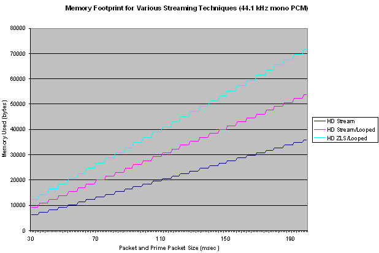
Illustration Because packet sizes are sector aligned, they do not increase strictly linearly. (The curve of a nonlooping zero-latency streamed wave would be identical to that of the looped regular streaming curve.)
The numbers become more significant for game disc reads with the larger sector alignment size. For the 44.1-kHz mono wave, packet sizes between 186 and 208 msec all translate to 18432 bytes, so 208 msec will be the actual packet size used for all of those requested values.
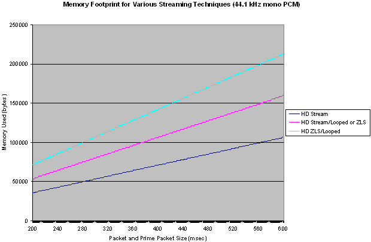
And ADPCM alignment of course widens the range of values that will read the same amount of memory. For a 44.1-kHz mono ADPCM wave being streamed from the hard disk, packet sizes of up to 185 msec will use the minimum sector alignment of 4608 bytes, while a 186 msec packet size would bump us up to double that value, at 9216 bytes.
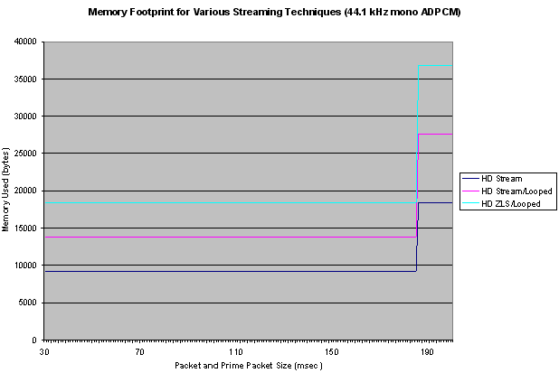
Determining these kinds of "boundary points" can be done quite easily by plugging values into the accompanying spreadsheet for your particular format of waves and seeing how high you can push the packet size (in milliseconds) before the packet size (in bytes) becomes too large.
Based on the above data, here are some basic recommendations for packet size for the most commonly encountered formats. Again, these are fairly conservative as far as packet size (using a minimum size of 100 msec for the hard disk and 500 msec for the game disc); if no other aspects of a title need access to the file system in-game, packet size could potentially be significantly reduced.
| Format (assume 16 bits for PCM waves) | Packet/prime packet size (msec) | Bandwidth | Memory: nonlooped regular streaming / nonlooped zero-latency streaming |
|---|---|---|---|
| 48 kHz mono | 101 msec | 96 KB/sec | 19 KB / 29 KB |
| 48 kHz stereo | 101 msec | 192 KB/sec | 39 KB / 58 KB |
| 44.1 kHz mono | 104 msec | 88 KB/sec | 18 KB / 28 KB |
| 44.1 kHz stereo | 104 msec | 176 KB/sec | 36 KB / 55 KB |
| 44.1 kHz quad | 100 msec | 353 KB/sec | 71 KB / 106 KB |
| 44.1 kHz ADPCM mono | 185 msec | 25 KB/sec | 9 KB / 14 KB |
| 44.1 kHz ADPCM stereo | 185 msec | 50 KB/sec | 18 KB / 28 KB |
| 22.05 kHz mono | 104 msec | 44 KB/sec | 9 KB / 14 KB |
| 22.05 kHz stereo | 104 msec | 88 KB/sec | 18 KB / 28 KB |
| Format (assume 16 bits for PCM waves) | Packet/prime packet size (msec) | Bandwidth | Memory: nonlooped regular streaming / nonlooped zero-latency streaming |
|---|---|---|---|
| 48 kHz mono | 512 msec | 96 KB/sec | 98 KB / 147 KB |
| 48 kHz stereo | 501 msec | 192 KB/sec | 192 KB / 289 KB |
| 44.1 kHz mono | 510 msec | 88 KB/sec | 90 KB / 135 KB |
| 44.1 kHz stereo | 510 msec | 176 KB/sec | 180 KB / 270 KB |
| 44.1 kHz quad | 505 msec | 353 KB/sec | 356 KB / 535 KB |
| 44.1 kHz ADPCM mono | 743 msec | 25 KB/sec | 37 KB / 55 KB |
| 44.1 kHz ADPCM stereo | 743 msec | 50 KB/sec | 74 KB / 111 KB |
| 22.05 kHz mono | 510 msec | 44 KB/sec | 45 KB / 68 KB |
| 22.05 kHz stereo | 510 msec | 88 KB/sec | 90 KB / 135 KB |
Streaming from the hard disk or game disc gives you enormous flexibility over strictly in-memory playback of wave data. For a fraction of the memory footprint, you can have access to many hundreds (if not thousands) of megabytes of audio data. This allows you to use richer, higher fidelity sounds, as well as more variation in the source material that a game chooses from. Keep in mind the above considerations for memory use and bandwidth restrictions, and always communicate memory and file I/O budgets as early in the process as possible. Happy authoring!
For more information about topics presented here, please consult the Xbox Audio Best Practices Guide, the Xbox Development Kit documentation, or the white papers in the Audio Designer's Corner, or send an e-mail message to content@xbox.com.
1 For more information on asynchronous streaming and how it can be applied to non-audio data streaming, see the white paper Maximizing Xbox File Performance.
2 The outermost roughly 10 percent of the game disc often spins fast enough to generate read errors in all but ideal circumstances, leading to lessened bandwidth and increased access time.